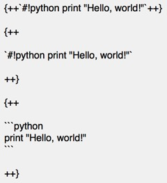

Derrors' Homepage
20.9. 绿色区块-代码
键入以开始搜索
主页
自然语言处理
阅读笔记
文档 & 教程
Derrors' Homepage
主页
主页
介绍
联系方式
自然语言处理
自然语言处理
1. 事实提取与验证(FEVER)
1. 事实提取与验证(FEVER)
(1) 任务介绍
(2) FEVER-NSMN
(3) FEVER-FFFFFF
2. 评论阅读理解(RRC)
3. 基于用户评论的商品问答
4. 其他
阅读笔记
阅读笔记
init
文档 & 教程
文档 & 教程
Markdown 语法
Markdown 语法
1. 语法总览
2. 标题
3. 段落
4. 引用
5. 表格
6. 代码
6. 代码
6.1. 行内
6.2. 区块
6.3. 高亮
7. 字体样式
7. 字体样式
7.1. 斜体,粗体,粗斜体
7.2. 上标,下标
7.3. 下划线
7.4. 横线
7.5. 下划线+横线
8. 列表
8. 列表
8.1. 无序列表
8.2. 有序列表
8.3. 任务列表
9. 分割线
10. 链接
10. 链接
10.1. 普通链接
10.2. 自动链接
10.3. 锚点提示
11. 图片
11. 图片
11.1. 行内式
11.2. 参考式
12. 转义
13. 高亮
13. 高亮
13.1. 代码高亮
13.2. 背景高亮
14. 注解
14. 注解
14.1. 介绍
14.2. 完整格式
14.3. 空标题
14.4. 无标题
14.5. 无类型
14.6. 折叠
14.7. 11种颜色样式
14.8. 嵌套
15. 脚注
16. 元信息
17. 数学公式
17. 数学公式
17.1. 介绍
17.2. 导入js
17.3. 用法
18. emoji
18. emoji
18.1. 介绍
18.2. 工作原理
18.3. 最佳实践
19. 特殊符号
20. 嵌套
20. 嵌套
20.1. 介绍
20.2. 注解-注解
20.3. 列表-列表
20.4. 引用-引用
20.5. 注解-代码块
20.6. 列表-代码块
20.7. 引用-代码块
20.8. 黄色区块-代码
20.9. 绿色区块-代码
20.10. 红色区块-代码
20.11. 绿接红区块-代码
20.12. 注解-列表-引用
20.13. 列表-列表-引用
20.14. 引用-引用-代码
20.9. 绿色区块-代码

效果
print
"Hello, world!"
print
"Hello, world!"
print
"Hello, world!"